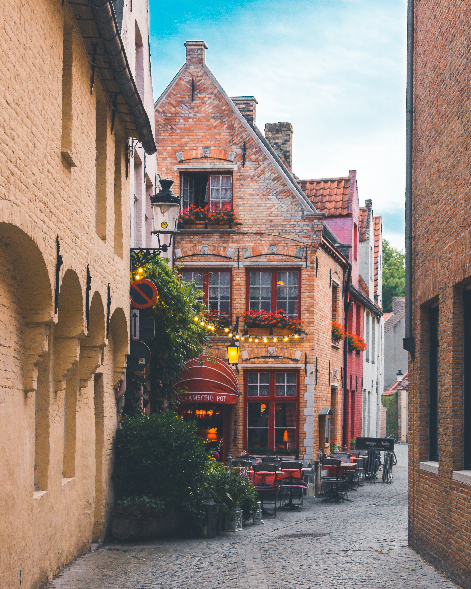
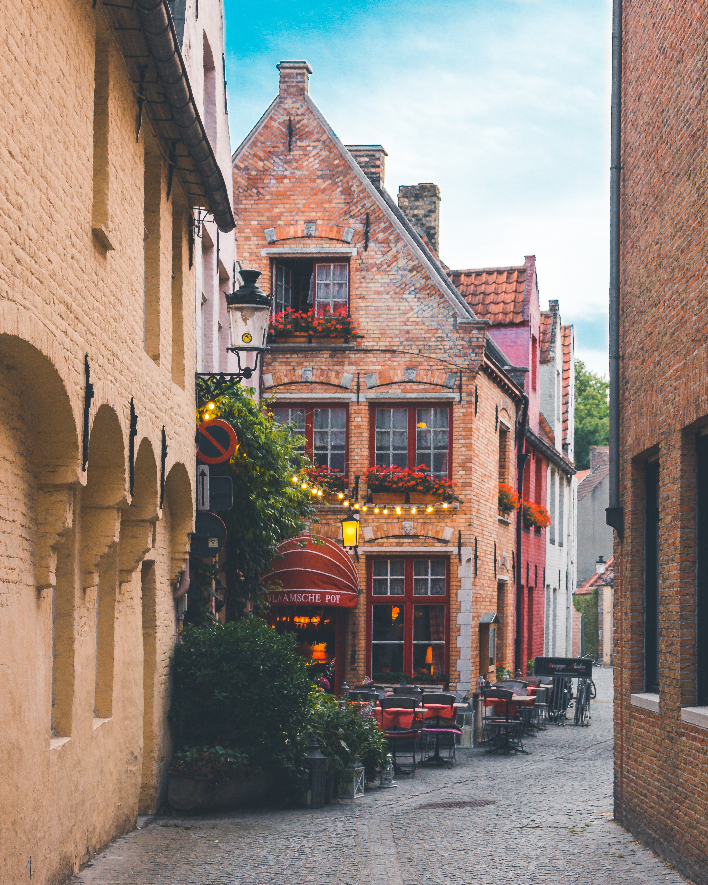

Tips for Traveling Abroad
Packing.
Pack light. Lay out all of your clothes and all of your money. Take ½ the clothes and double the money! Make use of laundromats and hotel laundry services. Whether you will be gone 5 days or 5 weeks, take 2 pairs of pants, 5-6 shirts, crinkly skirt for women and 2 pairs of shoes (that are comfortable and already broken in). In the spring/fall, just layer a little more, and be prepared to change those layers several times a day. Zip Lock bags are a terrific way to store your clothes and squeeze the air out to conserve space. For a terrific packing list, go to www.ricksteves.com, and print out his packing list. You should have a copy of your passport page in your checked luggage, while your passport will be with you in your carry-on luggage.
Carry-on.
Take all medications in prescription bottles or a paper copy of prescription. Plan on your checked luggage getting delayed, or lost. With this in mind, you should bring an extra pair of clothes in your carry on.
Flights.
Stay awake till you are on the East Coast. Then sleep if you can. Earplugs, eye patches and neck pillows are a must. On the trip home, I take a sleeping pill from Europe to the US, even if I am not tired. Then I try to stay awake from the East coast home. Take all your own food for the flights. You cannot count on the airline having what you need.
Arrival Day 1.
Stay awake all day. Do something mindless. Best to stay outside, walking all over exploring, and away from your hotel bed. Have an early dinner, and gratefully hit the sack any time after 8:00pm (20:00). If you nap today, it will take days to get your body acclimated to the time change. My favorite first day activity, if available, is a bike tour.
Hotels.
Be prepared for hotels that have uneven floors, crooked hallways, multiple levels, minimal elevators, etc. Keep in mind that the building is probably twice as old as our country. Complain only if there is something the hotel can actually remedy for you, and then be patient. Their hotel rooms are much smaller. You will need a plug adaptor for the country you are visiting. Most modern small appliances are dual voltage, but check yours. If your curling iron is old, it may fry your hair. Most hotels provide hair-dryers.
Walking.
You will be walking on uneven cobblestone streets, taking stairs, and standing in lines. So take good walking shoes that are already broken in. Two pairs that you can alternate wearing is a great idea. Cut your toenails or go for a pedicure before you leave.
Money.
Have approximately $100 in small bills on hand for tips, and food money, for coming and going. At your arrival airport, get a couple hundred Euro (or GBS) from an ATM or the currency exchange counter. Before leaving home, you have called all your credit and debit card companies and notified them that you need access to your money while on this trip. Make sure and understand how much cash you can get out of the ATM on a single day. Make sure your debit card takes a 4 digit pin. Do not use traveler’s checks in any currency. Empty your wallet of all unnecessary items before you go. You could use a neck pouch, money belt, or a small purse/wallet secured across your body.
Security.
Although you will be in absolute awe of the beauty and magnificence, ALWAYS stay AWARE of your surroundings. View any commotion as a ploy to catch you off guard. When in a crowd, keep your purse across your body and one hand on it at all times. Keep your eyes on your travel companion, and theirs on yours. Sometimes those scary looking dudes will rescue you or just share practical advice.
Smile.
A smile communicates everywhere, remember that broadening your world is one reason for traveling.
Pubs.
Pubs are not bars, although they do serve alcohol. Pub is short for “public house”. Even if you are a non-drinker, pubs are a great way to experience many parts of Europe. A pub is also where you will find cheap food. When eating at a pub (or similar in other countries), you order at the bar, find your seat, then go back and get your food when you are signaled. Nonsmoking areas will be very difficult to find, so you will just learn to work around it.
 
